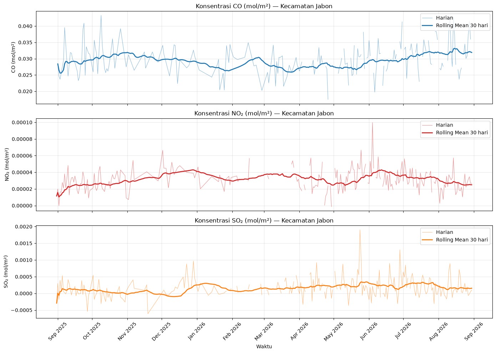
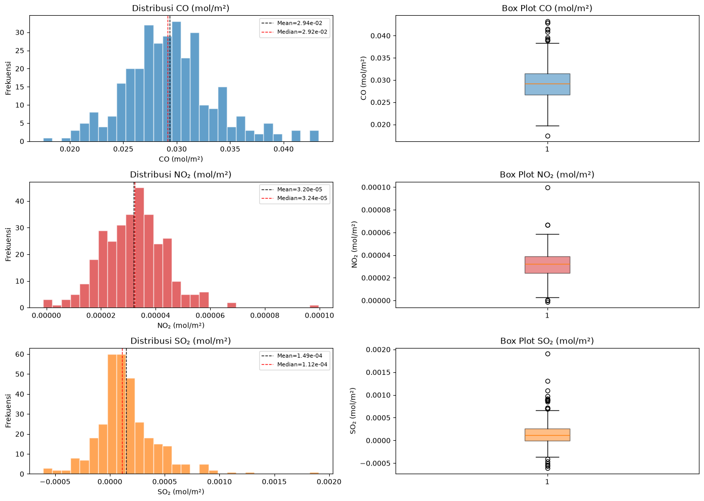
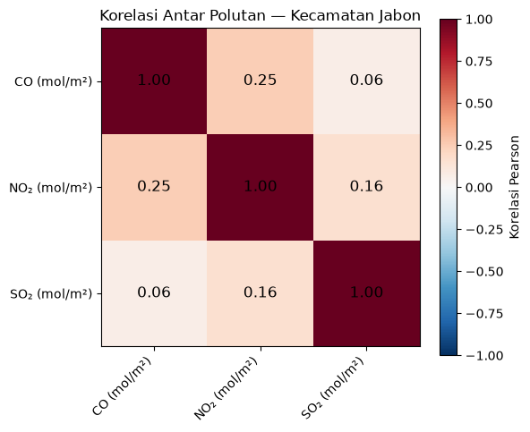
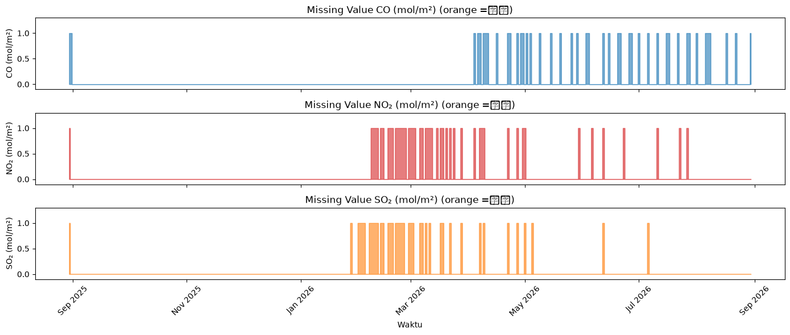
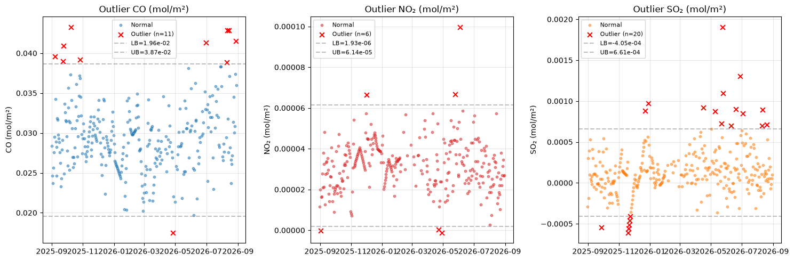

2.3 Exploratory Data Analysis (EDA)#
Bagian ini menyajikan analisis eksplorasi awal terhadap data kualitas udara Kecamatan Jabon, Kabupaten Sidoarjo periode 31 Agustus 2025 s.d. 31 Agustus 2026 (366 hari observasi), yang bersumber dari satelit Sentinel-5P L2 via Copernicus openEO.
Fokus analisis: 3 polutan utama — CO, NO₂, dan SO₂.
import pandas as pd
import numpy as np
import matplotlib.pyplot as plt
import matplotlib.dates as mdates
import warnings
warnings.filterwarnings('ignore')
plt.rcParams['figure.dpi'] = 100
plt.rcParams['font.size'] = 10
2.3.1 Memuat Data#
Data dibaca dari file CSV mentah untuk masing-masing polutan. Setiap file memiliki kolom date (waktu UTC) dan kolom nilai konsentrasi polutan.
# Definisi polutan target
POLLUTANTS = ['CO', 'NO2', 'SO2']
COLORS = {'CO': '#1f77b4', 'NO2': '#d62728', 'SO2': '#ff7f0e'}
LABELS = {'CO': 'CO (mol/m²)', 'NO2': 'NO₂ (mol/m²)', 'SO2': 'SO₂ (mol/m²)'}
BASE_RAW = '../data/downloads/jabon_pollutants_data'
# Baca semua data mentah
raw = {}
for p in POLLUTANTS:
df = pd.read_csv(f'{BASE_RAW}/jabon_{p}.csv')
df['date'] = pd.to_datetime(df['date'], utc=True)
df = df.sort_values('date').reset_index(drop=True)
df[p] = pd.to_numeric(df[p], errors='coerce')
raw[p] = df
print(f'{p}: {len(df)} baris, missing={df[p].isna().sum()} ({df[p].isna().sum()/len(df)*100:.1f}%)')
CO: 366 baris, missing=44 (12.0%)
NO2: 366 baris, missing=48 (13.1%)
SO2: 366 baris, missing=40 (10.9%)
# Gabungkan jadi satu DataFrame
combined = pd.DataFrame({'date': raw['NO2']['date']})
for p in POLLUTANTS:
combined[p] = raw[p][p].values
combined = combined.set_index('date').sort_index()
combined.head(10)
| CO | NO2 | SO2 | |
|---|---|---|---|
| date | |||
| 2025-08-30 00:00:00+00:00 | NaN | NaN | NaN |
| 2025-08-31 00:00:00+00:00 | NaN | 1.154831e-05 | -0.000292 |
| 2025-09-01 00:00:00+00:00 | 0.028394 | 1.989465e-05 | 0.000299 |
| 2025-09-02 00:00:00+00:00 | 0.024614 | -1.293079e-07 | -0.000185 |
| 2025-09-03 00:00:00+00:00 | 0.023711 | 1.628330e-05 | 0.000391 |
| 2025-09-04 00:00:00+00:00 | 0.025642 | 1.643787e-05 | 0.000099 |
| 2025-09-05 00:00:00+00:00 | 0.027574 | 2.774475e-05 | 0.000532 |
| 2025-09-06 00:00:00+00:00 | 0.029505 | 2.095322e-05 | 0.000048 |
| 2025-09-07 00:00:00+00:00 | 0.039571 | 3.807542e-05 | 0.000020 |
| 2025-09-08 00:00:00+00:00 | 0.034227 | 2.131551e-05 | -0.000016 |
2.3.2 Struktur Tabel Dataset#
Setiap polutan disimpan dalam berkas CSV terpisah dengan struktur kolom seragam:
Kolom |
Tipe Data |
Deskripsi |
|---|---|---|
|
datetime (UTC) |
Tanggal observasi harian |
|
integer |
Indeks geometri (selalu 0 untuk Kecamatan Jabon) |
|
float64 |
Nilai konsentrasi harian rata-rata spasial |
2.3.3 Visualisasi Time Series#
Plot garis konsentrasi harian untuk masing-masing polutan.
fig, axes = plt.subplots(3, 1, figsize=(14, 10), sharex=True)
for i, p in enumerate(POLLUTANTS):
ax = axes[i]
# Data harian
ax.plot(combined.index, combined[p], color=COLORS[p], alpha=0.5, linewidth=0.8, label='Harian')
# Rolling mean 30 hari
rolling = combined[p].rolling(window=30, min_periods=1).mean()
ax.plot(combined.index, rolling, color=COLORS[p], linewidth=2, label='Rolling Mean 30 hari')
ax.set_ylabel(LABELS[p])
ax.set_title(f'Konsentrasi {LABELS[p]} — Kecamatan Jabon')
ax.legend(loc='upper right')
ax.grid(True, alpha=0.3)
axes[-1].set_xlabel('Waktu')
axes[-1].xaxis.set_major_formatter(mdates.DateFormatter('%b %Y'))
axes[-1].xaxis.set_major_locator(mdates.MonthLocator())
plt.xticks(rotation=45)
plt.tight_layout()
plt.show()

Interpretasi Time Series#
CO: Tren relatif stabil dengan fluktuasi ringan, mencerminkan emisi latar belakang dari pembakaran bahan bakar.
NO₂: Fluktuasi lebih dinamis dengan beberapa lonjakan periodik, berkaitan dengan intensitas lalu lintas dan aktivitas industri.
SO₂: Konsentrasi rendah dengan lonjakan sesekali, mengindikasikan sumber emisi industri yang intermittan.
2.3.4 Statistik Deskriptif#
Tabel berikut merangkum statistik deskriptif dasar dari masing-masing polutan berdasarkan data mentah (sebelum imputasi), hanya dari observasi yang tersedia (non-NaN).
stats_list = []
for p in POLLUTANTS:
s = combined[p].dropna()
Q1 = s.quantile(0.25)
Q3 = s.quantile(0.75)
IQR = Q3 - Q1
lb = Q1 - 1.5 * IQR
ub = Q3 + 1.5 * IQR
n_outlier = ((s < lb) | (s > ub)).sum()
stats_list.append({
'Polutan': p,
'N': len(s),
'Missing': combined[p].isna().sum(),
'Missing%': f"{combined[p].isna().sum()/len(combined)*100:.1f}%",
'Min': f"{s.min():.2e}",
'Q1': f"{Q1:.2e}",
'Median': f"{s.median():.2e}",
'Mean': f"{s.mean():.2e}",
'Q3': f"{Q3:.2e}",
'Max': f"{s.max():.2e}",
'Std': f"{s.std():.2e}",
'Skewness': round(s.skew(), 2),
'Kurtosis': round(s.kurtosis(), 2),
'Outlier': n_outlier,
})
stats_df = pd.DataFrame(stats_list)
stats_df
| Polutan | N | Missing | Missing% | Min | Q1 | Median | Mean | Q3 | Max | Std | Skewness | Kurtosis | Outlier | |
|---|---|---|---|---|---|---|---|---|---|---|---|---|---|---|
| 0 | CO | 322 | 44 | 12.0% | 1.75e-02 | 2.67e-02 | 2.92e-02 | 2.94e-02 | 3.15e-02 | 4.33e-02 | 4.20e-03 | 0.49 | 0.88 | 11 |
| 1 | NO2 | 318 | 48 | 13.1% | -1.25e-06 | 2.42e-05 | 3.24e-05 | 3.20e-05 | 3.91e-05 | 9.97e-05 | 1.19e-05 | 0.54 | 3.01 | 6 |
| 2 | SO2 | 326 | 40 | 10.9% | -6.10e-04 | -5.34e-06 | 1.12e-04 | 1.49e-04 | 2.61e-04 | 1.91e-03 | 2.82e-04 | 1.29 | 5.61 | 20 |
2.3.5 Distribusi Data (Histogram + Box Plot)#
fig, axes = plt.subplots(3, 2, figsize=(14, 10))
for i, p in enumerate(POLLUTANTS):
s = combined[p].dropna()
# Histogram
axes[i, 0].hist(s, bins=30, color=COLORS[p], alpha=0.7, edgecolor='white')
axes[i, 0].axvline(s.mean(), color='black', linestyle='--', linewidth=1, label=f'Mean={s.mean():.2e}')
axes[i, 0].axvline(s.median(), color='red', linestyle='--', linewidth=1, label=f'Median={s.median():.2e}')
axes[i, 0].set_title(f'Distribusi {LABELS[p]}')
axes[i, 0].set_xlabel(LABELS[p])
axes[i, 0].set_ylabel('Frekuensi')
axes[i, 0].legend(fontsize=8)
# Box plot
axes[i, 1].boxplot(s, vert=True, patch_artist=True,
boxprops=dict(facecolor=COLORS[p], alpha=0.5))
axes[i, 1].set_title(f'Box Plot {LABELS[p]}')
axes[i, 1].set_ylabel(LABELS[p])
plt.tight_layout()
plt.show()

Interpretasi Distribusi#
CO: Distribusi mendekati simetris (Skewness rendah), sedikit condong ke kanan.
NO₂: Distribusi sedikit right-skewed, menandakan beberapa hari dengan lonjakan konsentrasi.
SO₂: Distribusi right-skewed, dengan beberapa outlier di sisi atas.
2.3.6 Heatmap Korelasi Antar Polutan#
fig, ax = plt.subplots(figsize=(6, 5))
corr = combined[POLLUTANTS].corr()
im = ax.imshow(corr, cmap='RdBu_r', vmin=-1, vmax=1)
ax.set_xticks(range(len(POLLUTANTS)))
ax.set_yticks(range(len(POLLUTANTS)))
ax.set_xticklabels(LABELS.values(), rotation=45, ha='right')
ax.set_yticklabels(LABELS.values())
# Anotasi nilai korelasi
for i in range(len(POLLUTANTS)):
for j in range(len(POLLUTANTS)):
ax.text(j, i, f'{corr.iloc[i, j]:.2f}', ha='center', va='center', fontsize=12)
plt.colorbar(im, label='Korelasi Pearson')
plt.title('Korelasi Antar Polutan — Kecamatan Jabon')
plt.tight_layout()
plt.show()

2.3.7 Analisis Missing Value per Polutan#
fig, axes = plt.subplots(3, 1, figsize=(14, 6), sharex=True)
for i, p in enumerate(POLLUTANTS):
# Tandai mana yang NaN
missing = combined[p].isna().astype(int)
axes[i].fill_between(combined.index, missing, color=COLORS[p], alpha=0.6, step='mid')
axes[i].set_ylabel(LABELS[p])
axes[i].set_title(f'Missing Value {LABELS[p]} (orange =缺失)')
axes[i].set_ylim(-0.1, 1.3)
axes[-1].set_xlabel('Waktu')
axes[-1].xaxis.set_major_formatter(mdates.DateFormatter('%b %Y'))
plt.xticks(rotation=45)
plt.tight_layout()
plt.show()
# Ringkasan missing
print('Ringkasan Missing Value:')
for p in POLLUTANTS:
n_miss = combined[p].isna().sum()
pct = n_miss / len(combined) * 100
print(f' {p}: {n_miss} hari ({pct:.1f}%) — {"LOLOS" if pct <= 15 else "MELEBIHI BATAS 15%"}')

Ringkasan Missing Value:
CO: 44 hari (12.0%) — LOLOS
NO2: 48 hari (13.1%) — LOLOS
SO2: 40 hari (10.9%) — LOLOS
2.3.8 Deteksi Outlier (IQR)#
fig, axes = plt.subplots(1, 3, figsize=(15, 5))
for i, p in enumerate(POLLUTANTS):
s = combined[p].dropna()
Q1 = s.quantile(0.25)
Q3 = s.quantile(0.75)
IQR = Q3 - Q1
lb = Q1 - 1.5 * IQR
ub = Q3 + 1.5 * IQR
outlier = s[(s < lb) | (s > ub)]
normal = s[(s >= lb) & (s <= ub)]
axes[i].scatter(normal.index, normal.values, s=10, color=COLORS[p], alpha=0.5, label='Normal')
if len(outlier) > 0:
axes[i].scatter(outlier.index, outlier.values, s=40, color='red', marker='x', label=f'Outlier (n={len(outlier)})')
axes[i].axhline(lb, color='gray', linestyle='--', alpha=0.5, label=f'LB={lb:.2e}')
axes[i].axhline(ub, color='gray', linestyle='--', alpha=0.5, label=f'UB={ub:.2e}')
axes[i].set_title(f'Outlier {LABELS[p]}')
axes[i].set_ylabel(LABELS[p])
axes[i].legend(fontsize=8)
axes[i].grid(True, alpha=0.3)
plt.tight_layout()
plt.show()

2.3.9 Kesimpulan EDA#
CO memiliki data paling stabil, missing value rendah, dan distribusi mendekati simetris.
NO₂ menunjukkan dinamika yang lebih kompleks dengan fluktuasi harian signifikan.
SO₂ memiliki konsentrasi paling rendah namun dengan beberapa lonjakan outlier.
Ketiga polutan memiliki missing value di bawah 15% → lolos threshold untuk ekstraksi fitur.
Visualisasi time series memperlihatkan pola musiman yang perlu dieksplorasi lebih lanjut pada tahap ekstraksi fitur.